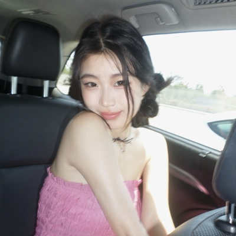

i love building startups, cooking up fun projects, skydiving, and experiencing the world.
Goal before i die: build things that change the world for the better.
我喜欢做公司、做好玩的小东西、跳伞,还有到处去看看这个世界。
死之前想干成的事:做出能让世界变好一点的东西。
50+ design styles to use in your next AI build. still adding more whenever i find a good one.
50+ 个设计风格,下次让 AI 做东西的时候直接拿去用。看到好的我还会继续加。
i kept running into visual styles i liked but didn’t know what to call, so i started collecting them here.
pick a style, copy the name, and add it to whatever you’re already asking your AI to make. mix a few together if u want.
some have visual refs, some are just names. the name is usually enough for your AI to know what u mean.
我总看到一些很喜欢的风格,但叫不出名字,干脆开始把它们收在这里。
挑一个,把名字复制走,加到你本来要跟 AI 说的那句话里。想混几个一起用也行。
有的配了参考图,有的只有名字。一般光给名字,AI 就懂你要什么了。
it turns any image into ASCII art in seconds. wanna try?
they’re looking for beta users.
if u wanna play with it, try grit.blue + send them some feedback <3
一秒把图编出 ASCII,试试看?
现在正在找人试用。
想玩就去 grit.blue 试试,顺手留两句反馈 <3
built by @carbonvishoxide